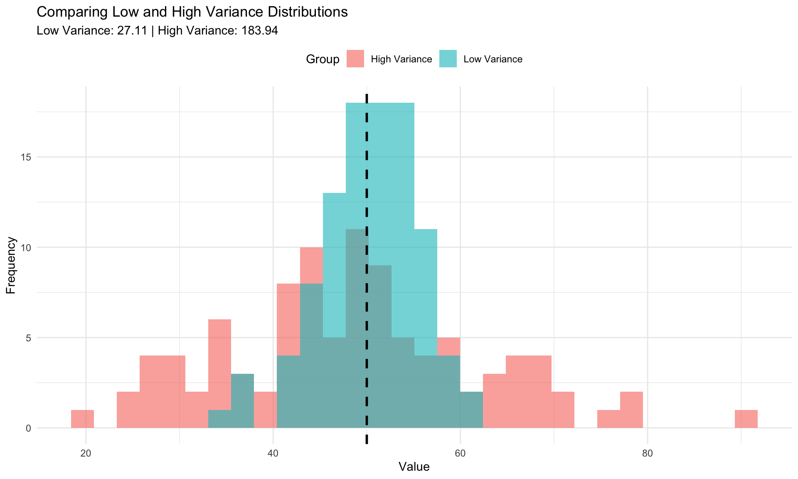
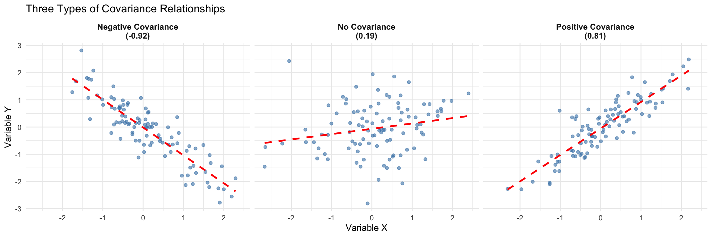
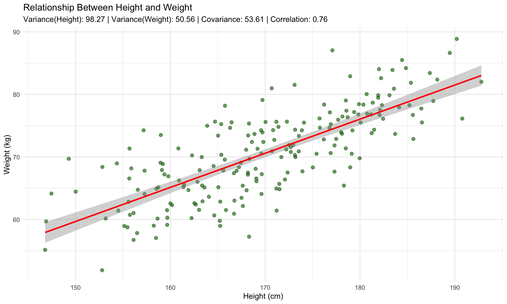

Variance and covariance are fundamental concepts in statistics that help us understand how data varies and how variables relate to each other. In this document, we’ll explore both concepts using R code and visualizations.
Variance
Variance measures how spread out a set of numbers is from their mean (average). It tells us how much the data points differ from the average value.
Note: R’s var() function uses \(n-1\) in the denominator (sample variance), while our manual calculation uses \(n\) (population variance).
Visualizing Variance
Let’s visualize how variance represents spread:
library(ggplot2)# Create two datasets with different variancesset.seed(42)low_variance <-rnorm(100, mean =50, sd =5)high_variance <-rnorm(100, mean =50, sd =15)# Combine into a data framedf <-data.frame(value =c(low_variance, high_variance),group =rep(c("Low Variance", "High Variance"), each =100))# Calculate varianceslow_var <-var(low_variance)high_var <-var(high_variance)# Create visualizationggplot(df, aes(x = value, fill = group)) +geom_histogram(alpha =0.6, bins =30, position ="identity") +geom_vline(xintercept =50, linetype ="dashed", color ="black", size =1) +labs(title ="Comparing Low and High Variance Distributions",subtitle =sprintf("Low Variance: %.2f | High Variance: %.2f", low_var, high_var),x ="Value",y ="Frequency",fill ="Group" ) +theme_minimal() +theme(legend.position ="top")
Warning: Using `size` aesthetic for lines was deprecated in ggplot2 3.4.0.
ℹ Please use `linewidth` instead.

Key Insight: The high variance group is much more spread out from the mean (dashed line), while the low variance group clusters tightly around it.
Covariance
Covariance measures how two variables change together. It tells us whether increases in one variable tend to correspond with increases (positive covariance) or decreases (negative covariance) in another variable.
Let’s visualize different types of covariance relationships:
set.seed(123)n <-100# Positive covariancex_pos <-rnorm(n)y_pos <- x_pos +rnorm(n, sd =0.5)# Negative covariancex_neg <-rnorm(n)y_neg <--x_neg +rnorm(n, sd =0.5)# No covariance (independent)x_none <-rnorm(n)y_none <-rnorm(n)# Create data framedf_cov <-data.frame(x =c(x_pos, x_neg, x_none),y =c(y_pos, y_neg, y_none),type =rep(c(sprintf("Positive Covariance\n(%.2f)", cov(x_pos, y_pos)),sprintf("Negative Covariance\n(%.2f)", cov(x_neg, y_neg)),sprintf("No Covariance\n(%.2f)", cov(x_none, y_none)) ), each = n))# Plotggplot(df_cov, aes(x = x, y = y)) +geom_point(alpha =0.6, color ="steelblue") +geom_smooth(method ="lm", se =FALSE, color ="red", linetype ="dashed") +facet_wrap(~ type, nrow =1) +labs(title ="Three Types of Covariance Relationships",x ="Variable X",y ="Variable Y" ) +theme_minimal() +theme(strip.text =element_text(size =10, face ="bold"))
`geom_smooth()` using formula = 'y ~ x'

Interpretation: - Positive Covariance: When X increases, Y tends to increase - Negative Covariance: When X increases, Y tends to decrease
- Zero Covariance: X and Y are independent (no linear relationship)
Practical Example: Heights and Weights
Let’s look at a real-world example using simulated height and weight data:
# Simulate height and weight dataset.seed(456)n_people <-200heights <-rnorm(n_people, mean =170, sd =10) # cmweights <-0.5* heights +rnorm(n_people, mean =-15, sd =5) # kg# Calculate statisticsheight_var <-var(heights)weight_var <-var(weights)height_weight_cov <-cov(heights, weights)correlation <-cor(heights, weights)# Create scatter plotdf_people <-data.frame(heights, weights)ggplot(df_people, aes(x = heights, y = weights)) +geom_point(alpha =0.6, color ="darkgreen", size =2) +geom_smooth(method ="lm", se =TRUE, color ="red") +labs(title ="Relationship Between Height and Weight",subtitle =sprintf("Variance(Height): %.2f | Variance(Weight): %.2f | Covariance: %.2f | Correlation: %.2f", height_var, weight_var, height_weight_cov, correlation ),x ="Height (cm)",y ="Weight (kg)" ) +theme_minimal()
`geom_smooth()` using formula = 'y ~ x'

Key Takeaway: Height and weight have positive covariance, meaning taller people tend to weigh more.
Variance vs. Covariance: Key Differences
Aspect
Variance
Covariance
Variables
One variable
Two variables
Measures
Spread of data
Relationship between variables
Range
Always positive (≥ 0)
Can be positive, negative, or zero
Units
Squared units of variable
Product of the two variables’ units
Covariance Matrix
When working with multiple variables, we often use a covariance matrix that shows all pairwise covariances:
# Create a dataset with multiple variablesset.seed(789)df_multi <-data.frame(var1 =rnorm(50, mean =10, sd =2),var2 =rnorm(50, mean =20, sd =3),var3 =rnorm(50, mean =30, sd =4))# Make var2 correlated with var1df_multi$var2 <- df_multi$var1 *1.5+rnorm(50, sd =2)# Calculate covariance matrixcov_matrix <-cov(df_multi)print("Covariance Matrix:")